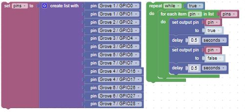

Blink in BIPES
Overview
In this lab, we will use BIPES to make the blue on-board LEDs on the Maker Pi blink on and off every quarter second. The only things you need to run this program are
- BIPES
- a USB cable
- a Maker Pi RP2040 microcontroller
Blinking the Builtin LEDs
The Maker Pi has thirteen built in blue LEDs wired to logical pins. Here is a sample program that you can use. It will blink each one of the LEDs in succession, up and down the board.

Let's take a look at the blocks... The top left block creates the initial list, in sequence, running from GP0 to GP28 (one general purpose pin for each of the 13 LEDs). The block immediately below that creates a second list, in reverse order. On the right side, we set up a variable to control the amount of time between turning an LED on and turning it off. Then there is a loop that will run forever, or until we stop the program. Finally, inside the outer loop is two innner loops. The first walks through each LED, turning it on, waiting 1/4 second, then turning it off. The second loop does the same, moving the LEDs on and off in the reverse order. Notice that we have to convert the pin numbers in the second list to integers, since the list was initialized with a string.
Changing the Blink Speed
This program will blink the built-in LED on and off every 1/4 of a second. By changing the delay variable you can make the LEDs blink faster and slower.
Challenge
What is the fastest you can make the LEDs blink and still see them changing? What does this tell you about the human eye?